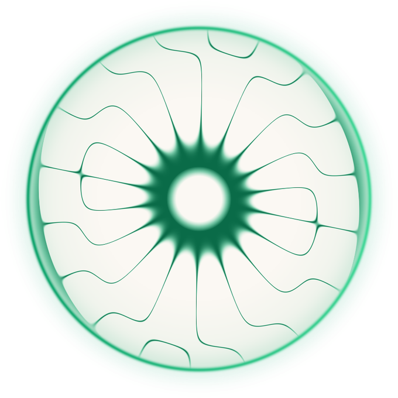
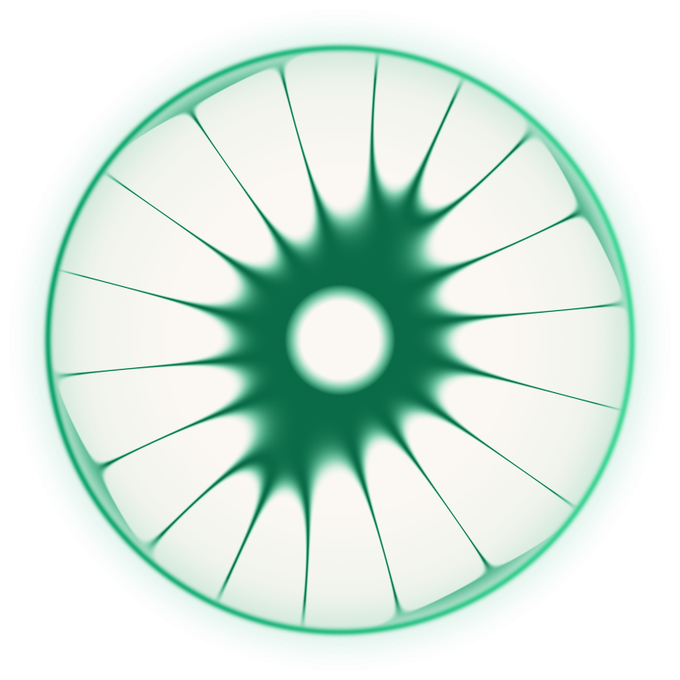

One system.
Every surface.
The colour scheme with the new green Abundance, the gradients, and careful advice on how it all deploys inside the app. This is a working draft for you to decide from, not locked canon. Set in Canela and Suisse, the fonts we already own.
Colour is 10% of the page.
The whole system rests on one ratio. A calm neutral canvas carries almost everything, one structural colour (Core Purple) marks what matters, and the frequency colours appear only as small jewels. Hold this and the brand looks designed. Break it and even perfect colours look like a paint box.
Your palette, with green.
Your four hues were a considered set, and they stay. The only change: Abundance moves from aqua to a jewel green, which fills the one empty gap on your wheel and carries the right meaning, growth and prosperity. Each colour is a full ramp, so it works as a fill, a tint, a gradient, and legible text.
Core
IdentityLove
RelationshipsVitality
EnergyAbundance
Opportunity · NEW GREENThree gradients, three jobs.
Every gradient in the system is one of three kinds. Using the right one is what keeps the product coherent. The rule: controls are functional, identity is frequency, brand moments are brand.
Functional — primary to deep, same hue. Buttons, play controls, the scrubber fill, active states. About 90% of all UI gradient. It reads as "this is a control," calm and structural. Usually Core Purple; when a listener is inside a frequency, that frequency's own primary-to-deep (below, the green control).
The same functional gradient in green, for a control shown inside the Abundance space.
Frequency — primary to gradEnd, analogous. The identity moment only: the cymatic tile, the now-playing wave, the active frequency. This is where the colour gets to glow. Green to luminous mint here; each frequency has its own.
Brand — one primary to a different frequency's primary. Big moments only: a hero, a loading screen, the app icon, a marketing sheet. Purple to green is a striking brand gradient. Never inside app UI, it is too loud for everyday screens.
The 60% that carries everything.
Three warm neutrals do the real work, each with one job in the app. Do not collapse them; the small difference between them is what gives depth.
Where the green actually lives.
This is the careful part. Here is the green Abundance deployed across two real app moments, with a note on every place colour is allowed to appear, and every place it is not.


- Active pill text turns the frequency accent (green #0A7A52). The pill itself stays white, only the text carries colour.
- The dot before "Abundance" and the Hz number use the accent green. Small marks only.
- The cymatic tile is the one place the frequency gradient glows.
- Everything else, canvas, cards, text, stays neutral. The green is maybe 8% of the screen.
Kindred Spirits
Your opportunity frequency, embedded
- The disc glows with the frequency gradient (green to mint) plus a soft halo. This is the identity moment, colour is allowed to be rich here.
- The play button and the scrubber fill use the functional gradient (green primary to deep), not the glowy one. Controls stay quiet.
- Labels use the light mint (#46D99A) so they read on the dark Stage ground.
- On dark, the green reads as a jewel. This is the richest the green ever gets, and it earns it because the listener chose to be here.
The line between premium and paint box.
The four frequency gradients exist and are beautiful one at a time. The skill is never letting all four fill a screen together.
- Let one frequency lead per screen (the one the listener is in).
- Use colour on the disc, the dot, the active text, the wave. Small jewels.
- Keep controls on the functional (quiet) gradient.
- Use tint or soft for any large coloured area.
- Let the neutral canvas breathe. Space is the luxury.
- Fill a screen with all four colours at once.
- Put the glowy frequency gradient on buttons or backgrounds.
- Use the vivid primary for small text (use the accent).
- Flood a card or hero with full-saturation colour.
- Add a fifth colour. Four frequencies plus neutrals is the whole set.
Canela and Suisse.
The two fonts we already own. Canela, a high-contrast display serif, is the emotional voice, headlines and the moments that matter. Suisse Int'l, a clean grotesque, carries everything functional: body, labels, numbers, UI.
of You
Canela · display serif · headlines, hero lines, the reveal. Set large, tight leading, italic for accents.
Suisse carries the body copy, calm and readable, with real space between the lines and tabular figures for numbers like 9:41 and 611 Hz.
Suisse Int'l · grotesque · body, labels (small-caps), UI, numbers.
An 8-point rhythm.
Every gap is a step on one scale, so spacing feels intentional everywhere. Sections get the big steps; components get the small ones. When unsure, add air.
Built from the system.
Buttons use the functional gradient. Chips use tint + soft + accent text. Cards are white with a hairline warm border. Everything inherits from the tokens, so a change in one place updates everywhere.
An asset, never typed.
Always the real wordmark asset. The only allowed change is colour: black #121314 on light, cream #FBF8F3 on dark. Never re-type it, re-space it, tint it to a frequency, or rebuild it. It stays monochrome so it never competes with the colour system.